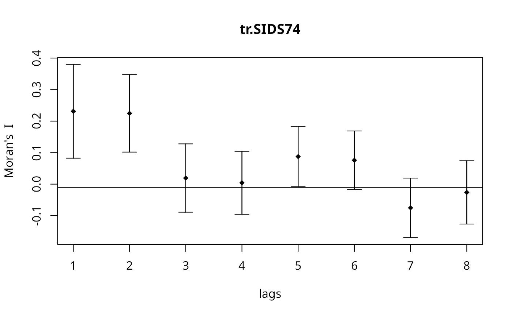

Spatial correlogram
sp.correlogram.RdSpatial correlograms for Moran's I and the autocorrelation coefficient, with print and plot helper functions.
sp.correlogram(neighbours, var, order = 1, method = "corr", style = "W", randomisation = TRUE, zero.policy = NULL, spChk=NULL) # S3 method for spcor plot(x, main, ylab, ylim, ...) # S3 method for spcor print(x, p.adj.method="none", ...)
Arguments
| neighbours | an object of class |
|---|---|
| var | a numeric vector |
| order | maximum lag order |
| method | "corr" for correlation, "I" for Moran's I, "C" for Geary's C |
| style |
|
| randomisation | variance of I or C calculated under the assumption of randomisation, if FALSE normality |
| zero.policy | default NULL, use global option value; if FALSE stop with error for any empty neighbour sets, if TRUE permit the weights list to be formed with zero-length weights vectors |
| spChk | should the data vector names be checked against the spatial objects for identity integrity, TRUE, or FALSE, default NULL to use |
| x | an object from |
| p.adj.method | correction method as in |
| main | an overall title for the plot |
| ylab | a title for the y axis |
| ylim | the y limits of the plot |
| … | further arguments passed through |
Details
The print function also calculates the standard deviates of Moran's I or Geary's C and a two-sided probability value, optionally using p.adjust to correct by the nymber of lags. The plot function plots a bar from the estimated Moran's I, or Geary's C value to +/- twice the square root of its variance (in previous releases only once, not twice). The table includes the count of included observations in brackets after the lag order. Care needs to be shown when interpreting results for few remaining included observations as lag order increases.
Value
returns a list of class spcor:
for "corr" a vector of values; for "I", a matrix of estimates of "I", expectations, and variances
"I" or "corr"
list of tables of neighbour cardinalities for the lag orders used
variable name
References
Cliff, A. D., Ord, J. K. 1981 Spatial processes, Pion, pp. 118--122, Martin, R. L., Oeppen, J. E. 1975 The identification of regional forecasting models using space-time correlation functions, Transactions of the Institute of British Geographers, 66, 95--118.
See also
Examples
nc.sids <- st_read(system.file("shapes/sids.shp", package="spData")[1], quiet=TRUE) rn <- as.character(nc.sids$FIPS) ncCC89_nb <- read.gal(system.file("weights/ncCC89.gal", package="spData")[1], region.id=rn) ft.SID74 <- sqrt(1000)*(sqrt(nc.sids$SID74/nc.sids$BIR74) + sqrt((nc.sids$SID74+1)/nc.sids$BIR74)) tr.SIDS74 <- ft.SID74*sqrt(nc.sids$BIR74) cspc <- sp.correlogram(ncCC89_nb, tr.SIDS74, order=8, method="corr", zero.policy=TRUE) print(cspc)#> Spatial correlogram for tr.SIDS74 #> method: Spatial autocorrelation #> 1 2 3 4 5 6 #> 0.38193491 0.47679881 0.11740653 0.09935901 0.27819159 0.30153012 #> 7 8 #> -0.05150923 0.05283813plot(cspc)#> Spatial correlogram for tr.SIDS74 #> method: Moran's I #> estimate expectation variance standard deviate Pr(I) two sided #> 1 (98) 0.2311685 -0.0103093 0.0055378 3.2450 0.0011747 ** #> 2 (98) 0.2246930 -0.0103093 0.0037817 3.8214 0.0001327 *** #> 3 (98) 0.0193576 -0.0103093 0.0029386 0.5473 0.5841914 #> 4 (98) 0.0042255 -0.0103093 0.0024974 0.2908 0.7711687 #> 5 (98) 0.0875548 -0.0103093 0.0022875 2.0462 0.0407386 * #> 6 (98) 0.0758362 -0.0103093 0.0021583 1.8543 0.0637011 . #> 7 (98) -0.0752243 -0.0103093 0.0022282 -1.3752 0.1690654 #> 8 (98) -0.0261063 -0.0103093 0.0025211 -0.3146 0.7530514 #> --- #> Signif. codes: 0 ‘***’ 0.001 ‘**’ 0.01 ‘*’ 0.05 ‘.’ 0.1 ‘ ’ 1#> Spatial correlogram for tr.SIDS74 #> method: Moran's I #> estimate expectation variance standard deviate Pr(I) two sided #> 1 (98) 0.2311685 -0.0103093 0.0055378 3.2450 0.009397 ** #> 2 (98) 0.2246930 -0.0103093 0.0037817 3.8214 0.001061 ** #> 3 (98) 0.0193576 -0.0103093 0.0029386 0.5473 1.000000 #> 4 (98) 0.0042255 -0.0103093 0.0024974 0.2908 1.000000 #> 5 (98) 0.0875548 -0.0103093 0.0022875 2.0462 0.325909 #> 6 (98) 0.0758362 -0.0103093 0.0021583 1.8543 0.509609 #> 7 (98) -0.0752243 -0.0103093 0.0022282 -1.3752 1.000000 #> 8 (98) -0.0261063 -0.0103093 0.0025211 -0.3146 1.000000 #> --- #> Signif. codes: 0 ‘***’ 0.001 ‘**’ 0.01 ‘*’ 0.05 ‘.’ 0.1 ‘ ’ 1plot(Ispc)#> Spatial correlogram for tr.SIDS74 #> method: Geary's C #> estimate expectation variance standard deviate Pr(I) two sided #> 1 (98) 0.7172624 1.0000000 0.0059986 -3.6506 0.0002617 *** #> 2 (98) 0.6817819 1.0000000 0.0046785 -4.6523 3.282e-06 *** #> 3 (98) 0.9470179 1.0000000 0.0044311 -0.7959 0.4260762 #> 4 (98) 1.0016202 1.0000000 0.0041985 0.0250 0.9800516 #> 5 (98) 0.8977501 1.0000000 0.0038054 -1.6575 0.0974119 . #> 6 (98) 0.9173310 1.0000000 0.0036428 -1.3697 0.1707819 #> 7 (98) 1.0527148 1.0000000 0.0037227 0.8640 0.3875979 #> 8 (98) 1.0067939 1.0000000 0.0036482 0.1125 0.9104415 #> --- #> Signif. codes: 0 ‘***’ 0.001 ‘**’ 0.01 ‘*’ 0.05 ‘.’ 0.1 ‘ ’ 1#> Spatial correlogram for tr.SIDS74 #> method: Geary's C #> estimate expectation variance standard deviate Pr(I) two sided #> 1 (98) 0.7172624 1.0000000 0.0059986 -3.6506 0.002093 ** #> 2 (98) 0.6817819 1.0000000 0.0046785 -4.6523 2.626e-05 *** #> 3 (98) 0.9470179 1.0000000 0.0044311 -0.7959 1.000000 #> 4 (98) 1.0016202 1.0000000 0.0041985 0.0250 1.000000 #> 5 (98) 0.8977501 1.0000000 0.0038054 -1.6575 0.779295 #> 6 (98) 0.9173310 1.0000000 0.0036428 -1.3697 1.000000 #> 7 (98) 1.0527148 1.0000000 0.0037227 0.8640 1.000000 #> 8 (98) 1.0067939 1.0000000 0.0036482 0.1125 1.000000 #> --- #> Signif. codes: 0 ‘***’ 0.001 ‘**’ 0.01 ‘*’ 0.05 ‘.’ 0.1 ‘ ’ 1plot(Cspc)drop.no.neighs <- !(1:length(ncCC89_nb) %in% which(card(ncCC89_nb) == 0)) sub.ncCC89.nb <- subset(ncCC89_nb, drop.no.neighs) plot(sp.correlogram(sub.ncCC89.nb, subset(tr.SIDS74, drop.no.neighs), order=8, method="corr"))